, строим график тока i(t) (рис. 14.4).
, строим график тока i(t) (рис. 14.4). 3. ПЕРЕХОДНЫЕ ПРОЦЕССЫ В ЛИНЕЙНЫХ ЦЕПЯХ ВТОРОГО ПОРЯДКА
В цепи второго порядка характер изменения тока и напряжений на индуктивной катушке и конденсаторе зависит от соотношения параметров элементов R, L и С последовательной RLC-цепи (рис. 14.3, а):

а) при R > 2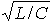 width="53" height="24" align="absmiddle"> (при неравных вещественных отрицательных корнях -а1 и -а2 характеристического уравнения цепи) переходный процесс носит апериодический характер (рис. 14.3, б):
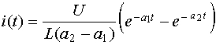 ; 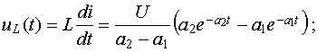
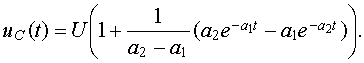
б) при R < 2 (при 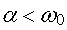 корни уравнения 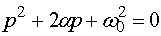 комплексно-сопряжены: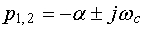, где 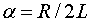- коэффициент затухания и 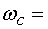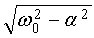- угловая частота свободных (собственных) колебаний реального контура; 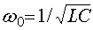 - собственная частота идеального контура (при R = 0)) ток
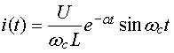.
Определив постоянную времени цепи 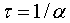 и период собственных колебаний тока Тсв = 2π /, строим график тока i(t) (рис. 14.4).
Из полученного аналитического выражения тока, а также из рисунка видно, что переходный процесс в этом случае является колебательным вследствие периодического перераспределения запасов энергии в магнитном и электрическом полях элементов L и С цепи.
Скорость затухания колебаний тока в переходном процессе зависит от постоянной времени 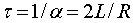 цепи и определяется декрементом затухания 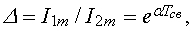 а логарифм натуральный от ( называют логарифмический декремент затухания 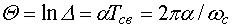. Откуда коэффициент затухания 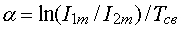. Как видно из выражения Q, за период Тсв ток i затухает в 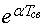 раз.

Графики напряжений (при 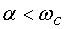) 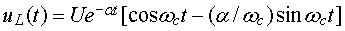 и 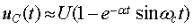 и тока i(t) изображены на рис. 14.3, в. Напряжения и ток на всех участках периодически меняют знак. Амплитуда колебаний изменяется по экспоненциальному закону; следовательно, в цепи совершаются затухающие колебания тока и напряжений с периодом Тсв= 2π /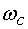.
В предельном случае α = 0 (R = 0), 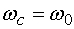 колебания будут незатухающими с периодом Т0 = 2π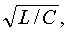соответствующими характеру этих кривых при установившемся процессе в случае резонанса напряжений.
в) В другом предельном случае, когда сопротивление, называемое критическим, равно Rкр = 2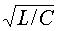 (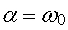) и корни p1 = p2 = - α = - R/2L уравнения 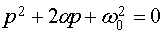 вещественны и равны друг другу), получим 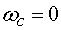 и Тсв =¥. При этом периодические затухающие колебания переходят в апериодические. Этот случай называют критическим (предельно апериодическим), а ток i, напряжения на катушке uL и на конденсаторе uC в переходном процессе определяют по формулам:
i = (U/L) te-αt; 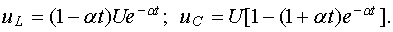